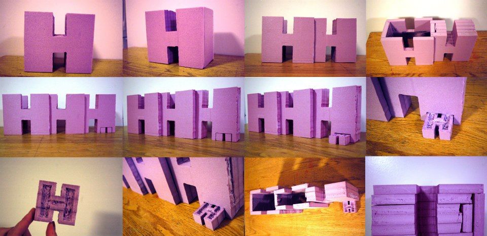

Typographic Monument
Harry Houdini, the famous magician, was my inspiration for this typographic monument. Using his initials, I created a wooden monument which reflects on what he is most famous for; his escapes. The monument is interactive and moves using a system of slots and pins. It begins as a single H that expands; each H representing the progress of his escapes. The final H at the end pops out to show him breaking free of the obstacles he overcomes in the completion of each escape. If the monument was built to its larger scale, it would be displayed in a childrens museum and allow children to interact with the monument and learn about Harry Houdini.


Project Process Below
Project Information
Typography Assignment
Wooden Monument
MassArt 2012
Sophomore Year
Materials & Methods
Research and Sketching, Foam, Wood, Band saw, Belt Sander, Radial Arm Saw